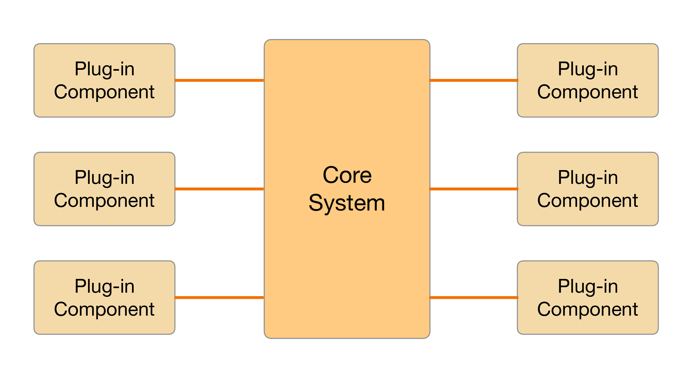
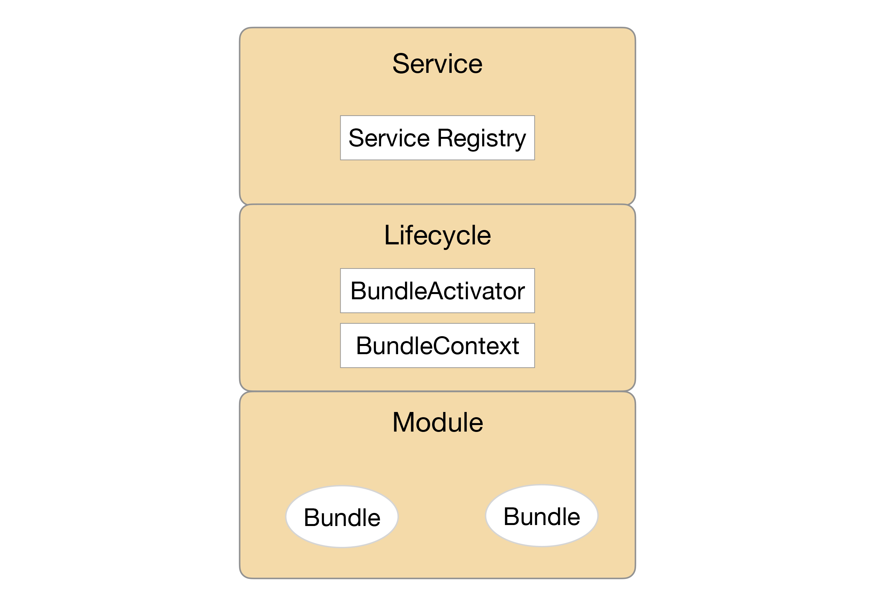
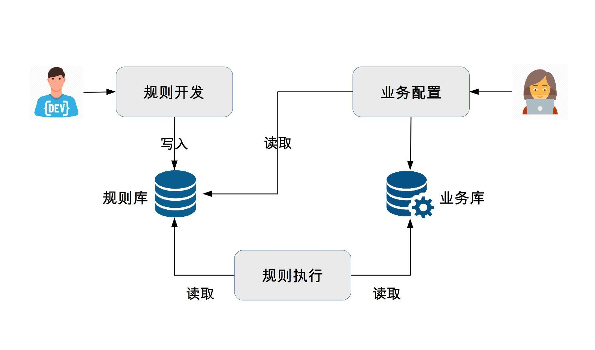
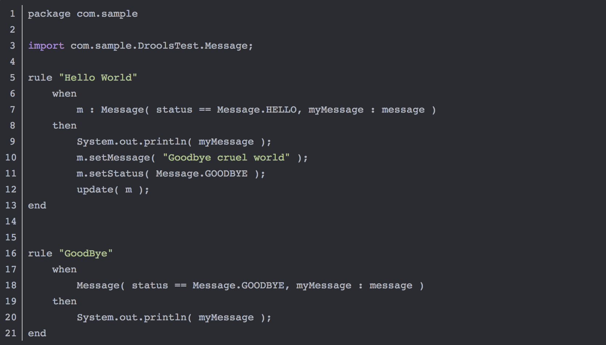
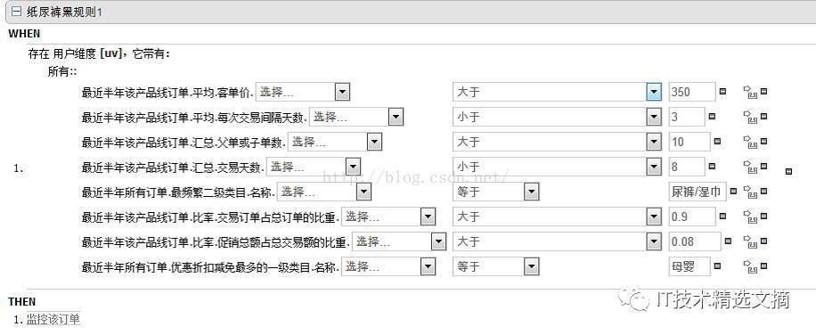

- 00 开篇词 照着做，你也能成为架构师！.md
- 01 架构到底是指什么？.md
- 02 架构设计的历史背景.md
- 03 架构设计的目的.md
- 04 复杂度来源：高性能.md
- 05 复杂度来源：高可用.md
- 06 复杂度来源：可扩展性.md
- 07 复杂度来源：低成本、安全、规模.md
- 08 架构设计三原则.md
- 09 架构设计原则案例.md
- 10 架构设计流程：识别复杂度.md
- 11 架构设计流程：设计备选方案.md
- 12 架构设计流程：评估和选择备选方案.md
- 13 架构设计流程：详细方案设计.md
- 14 高性能数据库集群：读写分离.md
- 15 高性能数据库集群：分库分表.md
- 16 高性能NoSQL.md
- 17 高性能缓存架构.md
- 18 单服务器高性能模式：PPC与TPC.md
- 19 单服务器高性能模式：Reactor与Proactor.md
- 20 高性能负载均衡：分类及架构.md
- 21 高性能负载均衡：算法.md
- 22 想成为架构师，你必须知道CAP理论.md
- 23 想成为架构师，你必须掌握的CAP细节.md
- 24 FMEA方法，排除架构可用性隐患的利器.md
- 25 高可用存储架构：双机架构.md
- 26 高可用存储架构：集群和分区.md
- 27 如何设计计算高可用架构？.md
- 28 业务高可用的保障：异地多活架构.md
- 29 异地多活设计4大技巧.md
- 30 异地多活设计4步走.md
- 31 如何应对接口级的故障？.md
- 32 可扩展架构的基本思想和模式.md
- 33 传统的可扩展架构模式：分层架构和SOA.md
- 34 深入理解微服务架构：银弹 or 焦油坑？.md
- 35 微服务架构最佳实践 - 方法篇.md
- 36 微服务架构最佳实践 - 基础设施篇.md
- 37 微内核架构详解.md
- 38 架构师应该如何判断技术演进的方向？.md
- 39 互联网技术演进的模式.md
- 40 互联网架构模板：存储层技术.md
- 41 互联网架构模板：开发层和服务层技术.md
- 42 互联网架构模板：网络层技术.md
- 43 互联网架构模板：用户层和业务层技术.md
- 44 互联网架构模板：平台技术.md
- 45 架构重构内功心法第一式：有的放矢.md
- 46 架构重构内功心法第二式：合纵连横.md
- 47 架构重构内功心法第三式：运筹帷幄.md
- 48 再谈开源项目：如何选择、使用以及二次开发？.md
- 49 谈谈App架构的演进.md
- 50 架构实战：架构设计文档模板.md
- 51 如何画出优秀的软件系统架构图？.md
- 加餐｜业务架构实战营开营了.md
- 加餐｜单服务器高性能模式性能对比.md
- 加餐｜扒一扒中台皇帝的外衣.md
- 如何高效地学习开源项目 华仔，放学别走！ 第3期.md
- 新书首发 《从零开始学架构》.md
- 架构专栏特别放送 华仔，放学别走！ 第2期.md
- 架构专栏特别放送 华仔，放学别走！第1期.md
- 架构师必读书单 华仔，放学别走！ 第5期.md
- 架构师成长之路 华仔，放学别走！ 第4期.md
- 结束语 坚持，成就你的技术梦想.md
37 微内核架构详解
微内核架构（Microkernel Architecture），也被称为插件化架构（Plug-in Architecture），是一种面向功能进行拆分的可扩展性架构，通常用于实现基于产品（原文为product-based，指存在多个版本、需要下载安装才能使用，与web-based相对应）的应用。例如Eclipse这类IDE软件、UNIX这类操作系统、淘宝App这类客户端软件等，也有一些企业将自己的业务系统设计成微内核的架构，例如保险公司的保险核算逻辑系统，不同的保险品种可以将逻辑封装成插件。
今天我将为你详细介绍常见的微内核架构及其实现。
基本架构
微内核架构包含两类组件：核心系统（core system）和插件模块（plug-in modules）。核心系统负责和具体业务功能无关的通用功能，例如模块加载、模块间通信等；插件模块负责实现具体的业务逻辑，例如专栏前面经常提到的“学生信息管理”系统中的“手机号注册”功能。
微内核的基本架构示意图如下：

上面这张图中核心系统Core System功能比较稳定，不会因为业务功能扩展而不断修改，插件模块可以根据业务功能的需要不断地扩展。微内核的架构本质就是将变化部分封装在插件里面，从而达到快速灵活扩展的目的，而又不影响整体系统的稳定。
设计关键点
微内核的核心系统设计的关键技术有：插件管理、插件连接和插件通信。
1.插件管理
核心系统需要知道当前有哪些插件可用，如何加载这些插件，什么时候加载插件。常见的实现方法是插件注册表机制。
核心系统提供插件注册表（可以是配置文件，也可以是代码，还可以是数据库），插件注册表含有每个插件模块的信息，包括它的名字、位置、加载时机（启动就加载，还是按需加载）等。
2.插件连接
插件连接指插件如何连接到核心系统。通常来说，核心系统必须制定插件和核心系统的连接规范，然后插件按照规范实现，核心系统按照规范加载即可。
常见的连接机制有OSGi（Eclipse使用）、消息模式、依赖注入（Spring使用），甚至使用分布式的协议都是可以的，比如RPC或者HTTP Web的方式。
3.插件通信
插件通信指插件间的通信。虽然设计的时候插件间是完全解耦的，但实际业务运行过程中，必然会出现某个业务流程需要多个插件协作，这就要求两个插件间进行通信。由于插件之间没有直接联系，通信必须通过核心系统，因此核心系统需要提供插件通信机制。这种情况和计算机类似，计算机的CPU、硬盘、内存、网卡是独立设计的配件，但计算机运行过程中，CPU和内存、内存和硬盘肯定是有通信的，计算机通过主板上的总线提供了这些组件之间的通信功能。微内核的核心系统也必须提供类似的通信机制，各个插件之间才能进行正常的通信。
OSGi架构简析
OSGi的全称是Open Services Gateway initiative，本身其实是指OSGi Alliance。这个联盟是Sun Microsystems、IBM、爱立信等公司于1999年3月成立的开放的标准化组织，最初名为Connected Alliance。它是一个非盈利的国际组织，旨在建立一个开放的服务规范，为通过网络向设备提供服务建立开放的标准，这个标准就是OSGi specification。现在我们谈到OSGi，如果没有特别说明，一般都是指OSGi的规范。
OSGi联盟的初始目标是构建一个在广域网和局域网或设备上展开业务的基础平台，所以OSGi的最早设计也是针对嵌入式应用的，诸如机顶盒、服务网关、手机、汽车等都是其应用的主要环境。然而，无心插柳柳成荫，由于OSGi具备动态化、热插拔、高可复用性、高效性、扩展方便等优点，它被应用到了PC上的应用开发。尤其是Eclipse这个流行软件采用OSGi标准后，OSGi更是成为了首选的插件化标准。现在我们谈论OSGi，已经和嵌入式应用关联不大了，更多是将OSGi当作一个微内核的架构模式。
Eclipse从3.0版本开始，抛弃了原来自己实现的插件化框架，改用了OSGi框架。需要注意的是，OSGi是一个插件化的标准，而不是一个可运行的框架，Eclipse采用的OSGi框架称为Equinox，类似的实现还有Apache的Felix、Spring的Spring DM。
OSGi框架的逻辑架构图如下：

1.模块层（Module层）
模块层实现插件管理功能。OSGi中，插件被称为Bundle，每个Bundle是一个Java的JAR文件，每个Bundle里面都包含一个元数据文件MANIFEST.MF，这个文件包含了Bundle的基本信息。例如，Bundle的名称、描述、开发商、classpath，以及需要导入的包和输出的包等，OSGi核心系统会将这些信息加载到系统中用于后续使用。
一个简单的MANIFEST.MF样例如下：
// MANIFEST.MF
Bundle-ManifestVersion: 2
Bundle-Name:UserRegister
Bundle-SymbolicName: com.test.userregister
Bundle-Version: 1.0
Bundle-Activator: com.test.UserRegisterActivator
Import-Package: org.log4j;version="2.0",
.....
Export-Package: com.test.userregister;version="1.0",
2.生命周期层（Lifecycle层）
生命周期层实现插件连接功能，提供了执行时模块管理、模块对底层OSGi框架的访问。生命周期层精确地定义了Bundle生命周期的操作（安装、更新、启动、停止、卸载），Bundle必须按照规范实现各个操作。例如：
public class UserRegisterActivator implements BundleActivator {
public void start(BundleContext context) {
UserRegister.instance = new UserRegister ();
}
public void stop(BundleContext context) {
UserRegister.instance = null;
}
}
3.服务层（Service层）
服务层实现插件通信的功能。OSGi提供了一个服务注册的功能，用于各个插件将自己能提供的服务注册到OSGi核心的服务注册中心，如果某个服务想用其他服务，则直接在服务注册中心搜索可用服务中心就可以了。
例如：
// 注册服务
public class UserRegisterActivator implements BundleActivator {
//在start()中用BundleContext.registerService()注册服务
public void start(BundleContext context) {
context.registerService(UserRegister.class.getName(), new UserRegisterImpl(), null);
}
//无须在stop()中注销服务，因为Bundle停止时会自动注销该Bundle中已注册的服务
public void stop(BundleContext context) {}
}
// 检索服务
public class Client implements BundleActivator {
public void start(BundleContext context) {
// 1. 从服务注册表中检索间接的“服务引用”
ServiceReference ref = context.getServiceReference(UserRegister.class.getName());
// 2. 使用“服务引用”去访问服务对象的实例
((UserRegister) context.getService(ref)).register();
}
public void stop(BundleContext context) {}
}
注意：这里的服务注册不是插件管理功能中的插件注册，实际上是插件间通信的机制。
规则引擎架构简析
规则引擎从结构上来看也属于微内核架构的一种具体实现，其中执行引擎可以看作是微内核，执行引擎解析配置好的业务流，执行其中的条件和规则，通过这种方式来支持业务的灵活多变。
规则引擎在计费、保险、促销等业务领域应用较多。例如电商促销，常见的促销规则有：
- 满100送50
- 3件立减50
- 3件8折
- 第3件免费
- 跨店满200减100
- 新用户立减50
- ……
以上仅仅列出来常见的几种，实际上完整列下来可能有几十上百种，再加上排列组合，促销方案可能有几百上千种，这样的业务如果完全靠代码来实现，开发效率远远跟不上业务的变化速度，而规则引擎却能够很灵活的应对这种需求，主要原因在于：
- 可扩展
通过引入规则引擎，业务逻辑实现与业务系统分离，可以在不改动业务系统的情况下扩展新的业务功能。
- 易理解
规则通过自然语言描述，业务人员易于理解和操作，而不像代码那样只有程序员才能理解和开发。
- 高效率
规则引擎系统一般提供可视化的规则定制、审批、查询及管理，方便业务人员快速配置新的业务。
规则引擎的基本架构如下：

我来简单介绍一下：
- 开发人员将业务功能分解提炼为多个规则，将规则保存在规则库中。
- 业务人员根据业务需要，通过将规则排列组合，配置成业务流程，保存在业务库中。
- 规则引擎执行业务流程实现业务功能。
对照微内核架构的设计关键点，我们来看看规则引擎是具体是如何实现的。
- 插件管理
规则引擎中的规则就是微内核架构的插件，引擎就是微内核架构的内核。规则可以被引擎加载和执行。规则引擎架构中，规则一般保存在规则库中，通常使用数据库来存储。
- 插件连接
类似于程序员开发的时候需要采用Java、C++等语言，规则引擎也规定了规则开发的语言，业务人员需要基于规则语言来编写规则文件，然后由规则引擎加载执行规则文件来完成业务功能，因此，规则引擎的插件连接实现机制其实就是规则语言。
- 插件通信
规则引擎的规则之间进行通信的方式就是数据流和事件流，由于单个规则并不需要依赖其他规则，因此规则之间没有主动的通信，规则只需要输出数据或者事件，由引擎将数据或者事件传递到下一个规则。
目前最常用的规则引擎是开源的JBoss Drools，采用Java语言编写，基于Rete算法（参考https://en.wikipedia.org/wiki/Rete_algorithm）。Drools具有下面这些优点：
- 非常活跃的社区支持，以及广泛的应用。
- 快速的执行速度。
- 与Java Rule Engine API（JSR-94）兼容。
- 提供了基于Web的BRMS——Guvnor，Guvnor提供了规则管理的知识库，通过它可以实现规则的版本控制，以及规则的在线修改与编译，使得开发人员和系统管理人员可以在线管理业务规则。
虽然Drools号称简单易用，但实际上其规则语言还是和编程语言比较类似，在实际应用的时候普通业务人员面对这样的规则语言，学习成本和理解成本还是比较高的，例如下面这个样例（https://blog.csdn.net/ouyangshixiong/article/details/46315273）：

因此，通常情况下需要基于Drools进行封装，将规则配置做成可视化的操作，例如下面电商反欺诈的一个示例（https://cloud.tencent.com/developer/article/1031839）：

小结
今天我为你讲了微内核架构设计的关键点以及常见的两种微内核具体实现：OSGi和规则引擎，希望对你有所帮助。
这就是今天的全部内容，留一道思考题给你吧，结合今天所学内容，尝试分析一下手淘Atlas容器化框架是如何实现微内核架构的设计关键点的，分享一下你的理解。
© 2019 - 2023 Liangliang Lee. Powered by gin and hexo-theme-book.